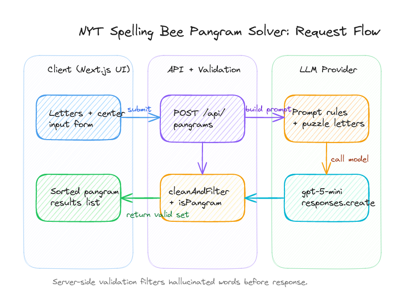
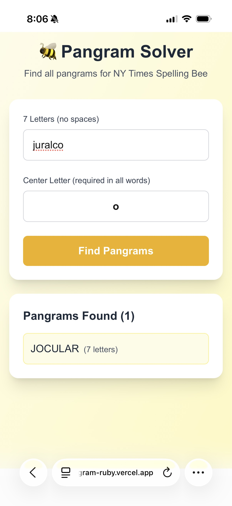
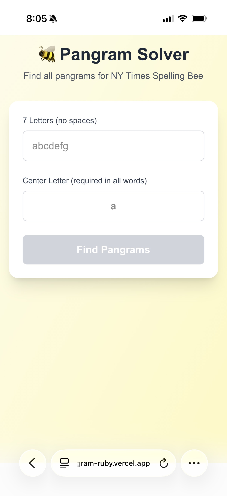

A Simple Pangram Solver for NYT Spelling Bee
05/03/2026
A small Next.js app that finds valid NYT Spelling Bee pangrams from seven letters and a required center letter.

In early 2025, I made a small Next.js app for finding NYT Spelling Bee pangrams.
You enter the 7 letters, mark the required center letter, press one button, and (hopefully) get back a cleaned list of valid pangrams. The whole thing is intentionally small: one UI, one server route, one model call, and one local filtering step before results come back.

The shape
Model call, then local validation
The model handles the word-generation step: find real words that use only the provided letters, including the center letter, and use all 7 letters at least once. After that, the server rechecks every candidate with deterministic local rules before returning anything.
TS
const instructions = "You are a word expert specialized in finding pangrams...";
const input = `Given letters "${letters}" with "${centerLetter}" as center letter...
- Each word must contain the center letter
- Use only the available letters
- Use all 7 letters at least once
- Return only words, one per line`;
const response = await openai.responses.create({
model: "gpt-5-mini",
instructions,
input,
});
const content = response.output_text || "";
const words = content
.split("\n")
.filter((line: string) => line.trim().length > 0);
const pangrams = cleanAndFilterPangrams(words, letters, centerLetter);That second step is what makes the app usable. The model can suggest candidates, but the final result still has to pass a straightforward local validation check.
UI states
There are really only two states that matter: before the solve and after the solve. I wanted both to stay simple. Very little chrome, one clear action, and a result list that is easy to scan.

That is basically it!
It was also one of those small early-2025 builds where I mostly described what I wanted, let an LLM produce the first pass, and then cleaned it up into something real in about an hour. Thanks for reading!